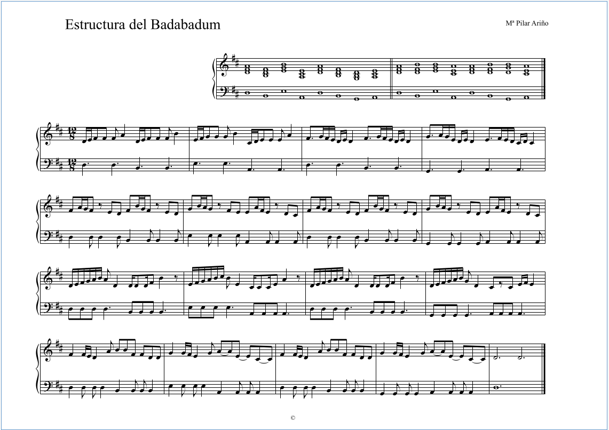
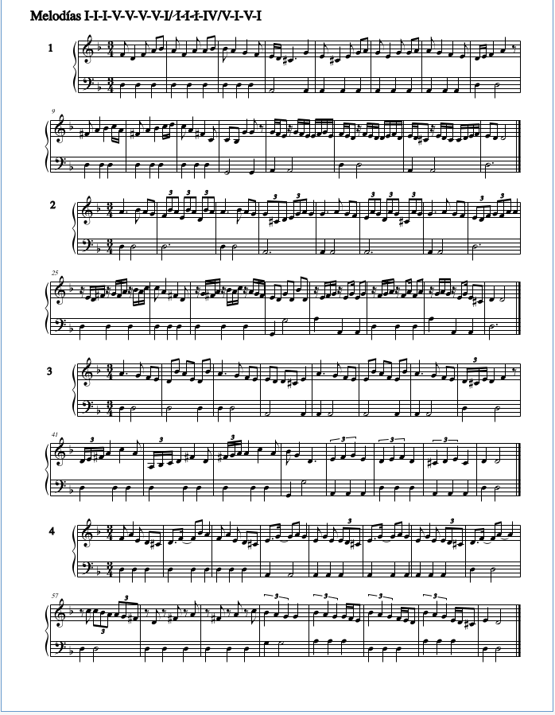
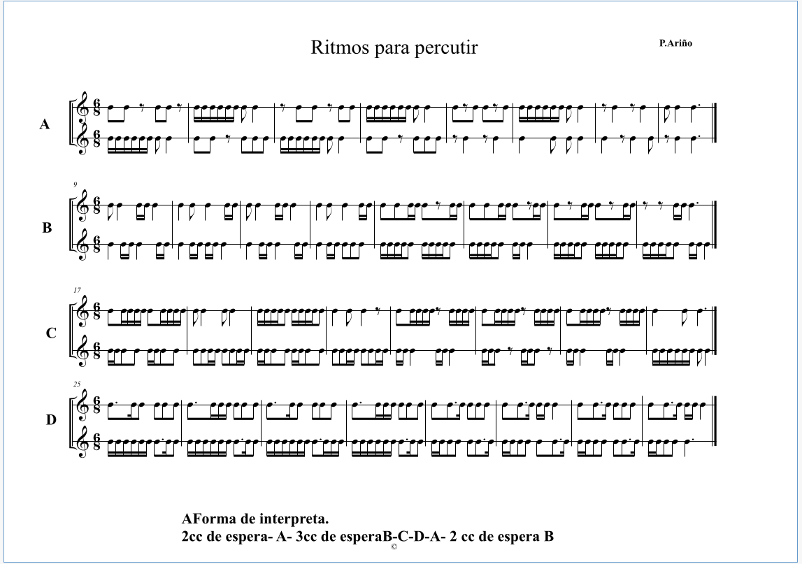
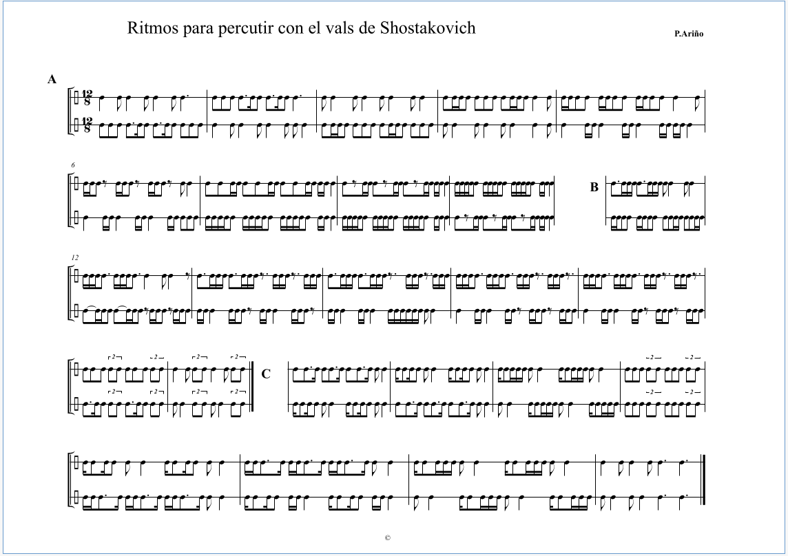
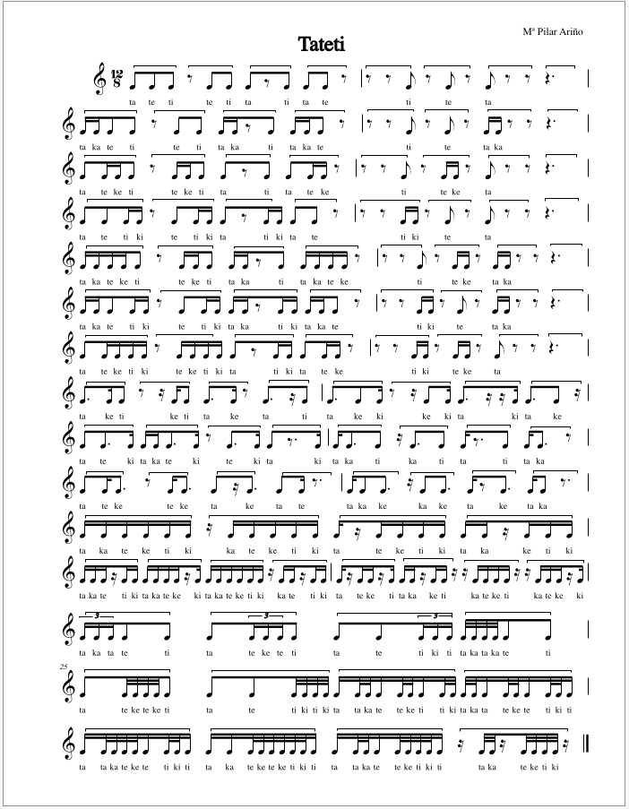

Semana 02 Curso 2022/2023
Profesora Pilar Ariño
Homework dated 30 Septiembre 2022
Table of Contents
Melodías 3, 2
Melodías 3, 3

Figure 2: Melodías 3º 3, repaso
Melodías 3. 4 (partitura??)
;; Tue 20 Dec 19:12:18 GMT 2022 acabo incluirla con fecha de hoy (I'm so sorry). En su momento no tenía claro qué paritura era
(para pillar contexto, revisar la conversación sobre esto en el grupo música del wassap).

Ritmos.

Figure 3: Ritmo 3 2º Elemental sub-ternaria
Ritmos, Vals de Shostakovich.

Figure 4: Ritmo 12 8 vals de Shostakovich
Tateti

Figure 5: Tateti